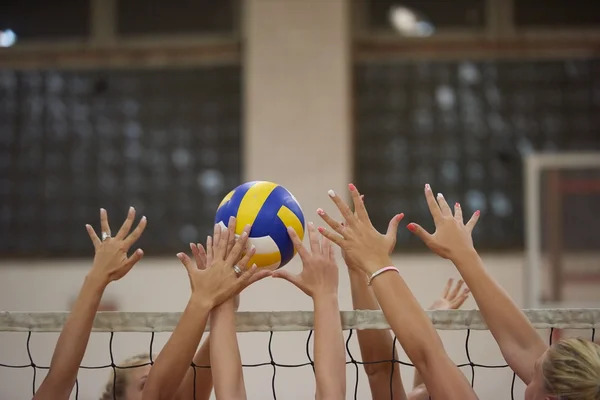
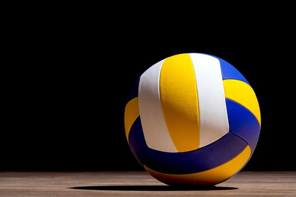
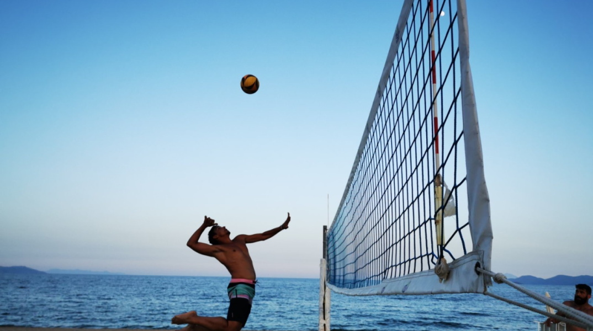

Καλώς ήρθατε στο VolleyHub
Το VolleyHub είναι μια σύγχρονη πλατφόρμα ενημέρωσης, η οποία αφορά κυρίως το ελληνικό βόλεϊ αλλά όχι μόνο! Εδώ θα βρείτε πληροφορίες για ομάδες, αγώνες, βαθμολογίες και βασικές γνώσεις για το άθλημα! Ζήσε το βόλεϊ πιο οργανωμένα από ποτέ!

Βασικοί Κανονισμοί Βόλεϊ
🎯 Στόχος του παιχνιδιού
Το βόλεϊ παίζεται από δύο ομάδες των 6 παικτών. Στόχος είναι η μπάλα να περάσει πάνω από το φιλέ και να ακουμπήσει στο έδαφος της αντίπαλης ομάδας.
🔁 Επαφές με τη μπάλα
Κάθε ομάδα έχει δικαίωμα για 3 επαφές (υποδοχή, πάσα, επίθεση) πριν επιστρέψει τη μπάλα στο αντίπαλο γήπεδο.
📌 Βασικά στοιχεία
- Άσος: άμεσος πόντος από σερβίς
- Μπλοκ: άμυνα στο φιλέ
- Time-out: 2 ανά σετ για κάθε ομάδα
🧍 Θέσεις παικτών
- Πασαδόρος
- Διαγώνιος
- Ακραίοι
- Κεντρικοί
- Λίμπερο
🔄 Περιστροφή
Οι παίκτες περιστρέφονται δεξιόστροφα κάθε φορά που η ομάδα κερδίζει το σερβίς, ώστε όλοι να περνούν από όλες τις θέσεις.
⏱️ Σετ & Νίκη
Τα σετ παίζονται στους 25 πόντους (διαφορά 2 πόντων). Το tie-break στους 15. Νικήτρια είναι η ομάδα με 3 σετ.

Ιστορία του Βόλεϊ
🏐 Η δημιουργία του αθλήματος
Το βόλεϊ δημιουργήθηκε το 1895 από τον William G. Morgan στις Ηνωμένες Πολιτείες, στη Μασαχουσέτη. Στόχος του ήταν να δημιουργήσει ένα άθλημα λιγότερο σωματικά απαιτητικό από το μπάσκετ, αλλά με έντονο ομαδικό χαρακτήρα.
📜 Αρχική ονομασία
Το αρχικό όνομα του αθλήματος ήταν “Mintonette”. Αργότερα μετονομάστηκε σε “Volleyball”, λόγω της βασικής ιδέας του παιχνιδιού: η μπάλα “volley” πάνω από το φιλέ χωρίς να ακουμπά στο έδαφος.
🌍 Παγκόσμια εξάπλωση
Το άθλημα εξαπλώθηκε γρήγορα σε όλο τον κόσμο μέσω στρατιωτικών βάσεων και εκπαιδευτικών ιδρυμάτων. Μέχρι τα μέσα του 20ού αιώνα είχε ήδη καθιερωθεί στην Ευρώπη, την Ασία και τη Νότια Αμερική.
🏆 Ίδρυση FIVB
Το 1947 ιδρύθηκε η Διεθνής Ομοσπονδία Βόλεϊ (FIVB), η οποία έθεσε ενιαίους κανόνες για το άθλημα και οργάνωσε τα πρώτα παγκόσμια πρωταθλήματα.
🥇 Παγκόσμια πρωταθλήματα
Το πρώτο Παγκόσμιο Πρωτάθλημα ανδρών διεξήχθη το 1949 και γυναικών το 1952, σηματοδοτώντας την αρχή της διεθνούς αγωνιστικής ιστορίας του βόλεϊ.
🏅 Ολυμπιακή ένταξη
Το βόλεϊ έγινε Ολυμπιακό άθλημα το 1964 στους Ολυμπιακούς Αγώνες του Τόκιο, καθιερώνοντάς το ως ένα από τα πιο δημοφιλή ομαδικά αθλήματα παγκοσμίως.
📈 Σύγχρονη εποχή
Σήμερα το βόλεϊ παίζεται σε πάνω από 220 χώρες με εκατομμύρια αθλητές, τόσο σε επαγγελματικό όσο και σε ερασιτεχνικό επίπεδο, με τεράστια τηλεοπτική και διαδικτυακή απήχηση.

Beach Volley
🏖️ Η αρχή του Beach Volley
Το beach volley ξεκίνησε στις παραλίες της Καλιφόρνιας τη δεκαετία του 1920 ως μια πιο χαλαρή μορφή του κλασικού βόλεϊ, που παιζόταν για ψυχαγωγία στην άμμο.
👥 Δομή ομάδας
Σε αντίθεση με το κλασικό βόλεϊ, το beach volley παίζεται με 2 παίκτες ανά ομάδα χωρίς αλλαγές, κάτι που αυξάνει την ένταση και την ευθύνη κάθε αθλητή.
🌞 Συνθήκες παιχνιδιού
Το παιχνίδι διεξάγεται σε εξωτερικό χώρο πάνω σε άμμο, με ήλιο, άνεμο και φυσικές συνθήκες που επηρεάζουν σημαντικά την τακτική και την απόδοση.
📏 Διαφορές από κλασικό βόλεϊ
- 2 παίκτες αντί για 6
- Χωρίς λίμπερο ή αλλαγές
- Παιχνίδι στην άμμο
- Μικρότερο γήπεδο
🏅 Ολυμπιακή ένταξη
Το beach volley έγινε Ολυμπιακό άθλημα το 1996 στους Ολυμπιακούς Αγώνες της Ατλάντα και έκτοτε αποτελεί ένα από τα πιο θεαματικά αγωνίσματα.
🔥 Σύγχρονη εξέλιξη
Σήμερα το beach volley είναι ένα παγκόσμιο επαγγελματικό άθλημα με διεθνή τουρνουά, μεγάλη τηλεοπτική κάλυψη και έντονη δημοτικότητα σε παραθαλάσσιες χώρες.
ΜΕΓΑΛΟΣ ΧΟΡΗΓΟΣ

ΕΠΙΣΗΜΟΙ ΧΟΡΗΓΟΙ


ΕΠΙΣΗΜΗ ΜΠΑΛΑ